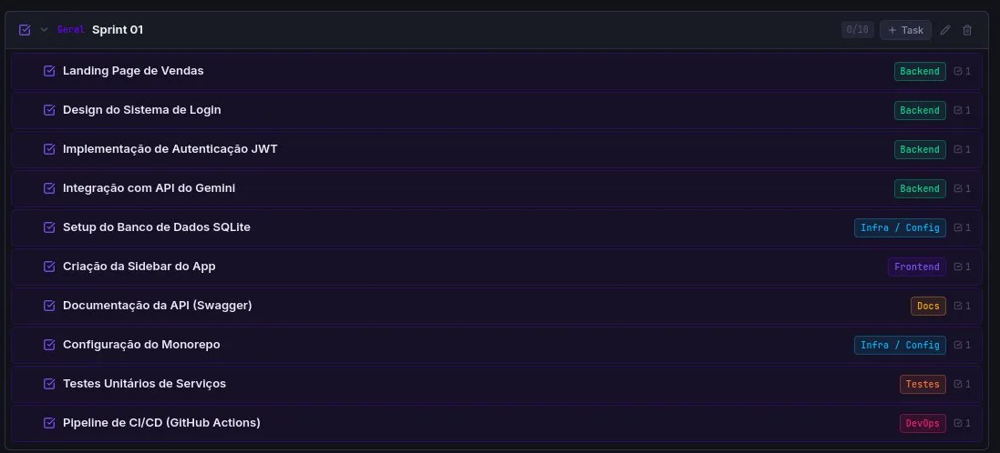
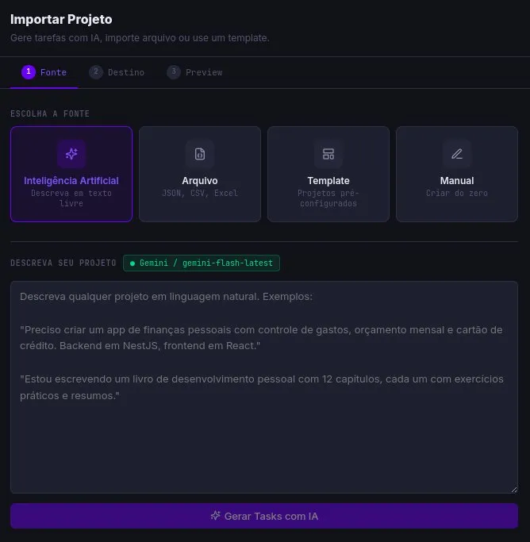
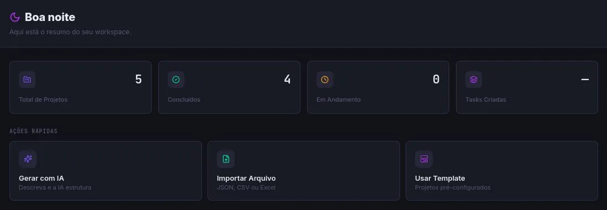
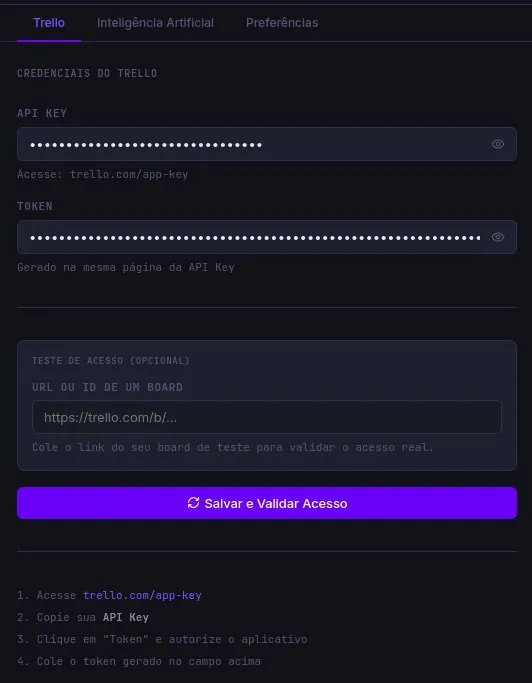
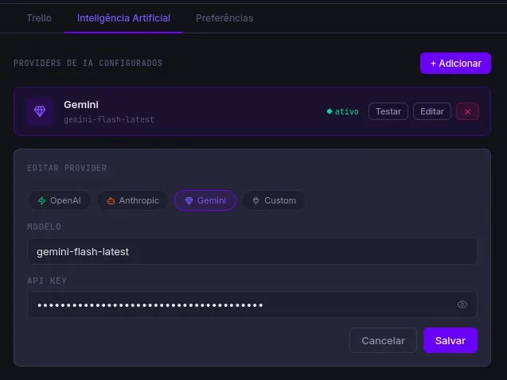

Você cria a ideia. A IA cria as tarefas. Tasko importa. Trello alinha.
Windows · Linux · macOS · Sem cadastro · Seus dados ficam só com você

De uma ideia escrita em texto para um board completo no Trello — sem copiar e colar, sem configurar nada manualmente.
Escreva em português mesmo. "Preciso de um e-commerce com 3 sprints: setup, frontend e backend." Simples assim.
GPT-4, Claude ou Gemini transforma seu texto em sprints, tasks com labels, checklists técnicos e datas de entrega.
Edite, reordene por drag-and-drop, ajuste detalhes — e clique em enviar. Cada card vai pro Trello com checklist nativo.
Construído para devs, PMs e qualquer pessoa que usa o Trello para organizar projetos reais.
Suporte a OpenAI, Anthropic Claude, Google Gemini e qualquer provider compatível com OpenAI. Use sua própria chave.
JSON, CSV e Excel. O parser reconhece automaticamente colunas como título, sprint, checklist e due date.
Scrum, lançamento de produto, escrita de livro, evento. Comece com estrutura pronta e personalize.
Edite título, descrição, tipo, sprint e checklist antes de enviar. Drag-and-drop para reordenar entre sprints.
Cada item de checklist vira um checkbox real dentro do card no Trello — não só texto na descrição.
Banco SQLite no seu computador. API keys criptografadas com AES-256. Seus dados nunca saem da sua máquina.
Defina datas de entrega e vincule URLs (Figma, GitHub, Notion) diretamente nos cards antes de enviar.
Gerencie múltiplos boards do Trello. O histórico de projetos fica salvo localmente entre sessões.
Backend, Frontend, DevOps, Testes — cada tipo de task recebe uma label colorida no Trello automaticamente.
PROVIDERS DE IA SUPORTADOS




Open source, sem assinatura, sem cadastro. Instale e comece em menos de 2 minutos.
Versão atual: v1.0.0 · Ver todas as versões
INSTALAÇÃO RÁPIDA — LINUX
chmod +x Tasko-1.0.0.AppImage
./Tasko-1.0.0.AppImage
Tasko é MIT. Sem telemetria, sem anúncios, sem plano pago escondido.
Contribua, fork, customize — o código é seu.
Coopere com o time e nos ajude a evoluir, faça uma doação para manter o projeto atualizado!